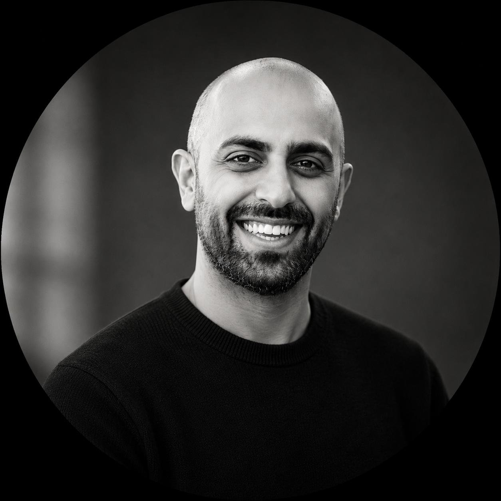

Royal Marsden Hospital · Institute of Cancer Research · Roche
Medical oncology registrar and pharmaceutical physician with expertise in industry-driven drug development. Currently based at the Royal Marsden Hospital (Early Diagnosis & Detection Unit), undertaking industry-sponsored doctoral research in patient-facing AI and multi-cancer early detection at the Institute of Cancer Research. Research interests: AI-driven patient communication for cancer screening, blood-based multi-cancer detection, health economics of screening programmes, and oncology drug access policy. Industry background spanning pharmaceutical medicine, regulatory science, clinical development, pharmacovigilance, and early-stage venture evaluation in life sciences.
Every doctor in the UK knows Passmedicine. I couldn't find an equivalent for AI/ML — so I built one. 205 questions, 14 topics, installable on your phone.
The NHS lung screening programme has a 50% uptake problem — worst in the communities that need it most. I modelled whether AI-driven patient engagement could close the gap, and what the economics look like.
Could a language model running on a phone read every clinical letter and build a structured personal health record the patient actually owns? A proof-of-concept in patient data sovereignty.
Developing microsimulation models to evaluate population-level screening strategies and their health-economic impact. Principal Investigator for U-RESPOND, a behavioural study on patient decision-making around MCED screening.
PhD Research · Roche / ICR
Building clinical decision support systems and NLP tools for lung cancer screening pathways. Benchmarking LLMs for safety, quality and readability as patient-facing decision aids.
ESMO AI Merit Award 2025
Analysing UK drug access timelines post-Brexit, regulatory divergence between FDA and EMA, and its impact on cancer patients.
ESMO Congress 2025
Medical oncology registrar trained across solid tumours and haematological malignancies.
NHS Medical Oncology
I completed academic foundation and core medical training at King's College Hospital on the haematology-oncology track. After a year in cardiac intensive care at the Royal Brompton, I joined Roche's physician rotation programme in 2019.
Over six years at Roche, I rotated through regulatory affairs, medical affairs, pharmacovigilance, clinical development, and search and evaluation, gaining an end-to-end perspective on the pharmaceutical product lifecycle. Alongside this, I continued specialist training in medical oncology at Imperial NHS Trust.
From 2021 to 2024, I served as portfolio mentor at Start Codon, Cambridge's life sciences accelerator (backed by Cambridge Innovation Capital and Genentech), contributing clinical and commercial due diligence to early-stage venture selection.
In 2024, I began industry-sponsored doctoral research at the Royal Marsden Hospital and Institute of Cancer Research, focused on multi-cancer early detection, microsimulation modelling, and health AI.